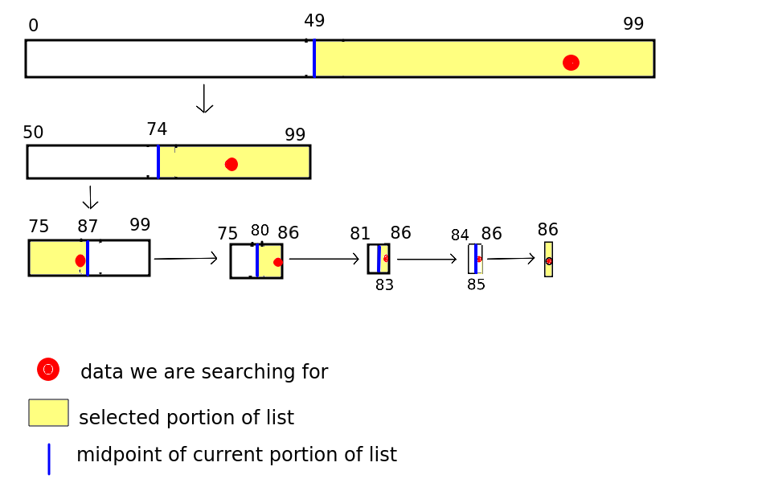

This week we will continue with our look at algorithms by looking at how we can perform efficient searches with the binary search. We will also examine approaches for searching trees (which we did in Topic 5), considering breadth-first search and depth-first-search. This topic will prepare us for looking at graphs in two weeks' time.
As we saw above, searching through a list is an O(n) operation, as the worst-case scenario performance will be linearly proportional to the length of the list. We have to loop through each member of the list until we find the item that we are looking for, which, if near the end of the list, may take some time.
This approach is known as brute-force. Brute-force algorithms attempt to find an answer through testing every possibility (here, every item in the list) and do not try to use any optimisations or more efficient techniques. Another example of a brute-force algorithm would be trying to find the factors of a number (factors of a number are every integer that the number can be divided by to give a further integer, for example the factors of 24 are 2, 3, 4, 6, 8 and 12). What we could do in a brute-force algorithm is to divide the number by every integer from 2 to the number to see if we get an integer as a result. This works, but is not efficient (O(n) with respect to the number).
Another perhaps notorious brute-force technique is one which, sadly, has been proven successful despite the time taken, and that is brute-force password attacks. In this, every possible password of a certain length is tested on a login system. The result will be that the password will eventually discovered. Brute-force password attacks are now feasible due to increased computing power, notably brute-force dictionary attacks (in which known words are tested) which is the reason why longer and more obscure passwords - with special characters, lower- and upper-case letters, and numbers - are now recommended compared to say 20 years ago.
Binary search is a significantly more efficient approach to searching than ordinary brute-force search (called linear search). It has O(log n) complexity, which as we saw last week, will mean it performs much better with large sets of data than an O(n) algorithm.
How does binary search work? It works by repeatedly "guessing" a position to index in a list to find a particular item of data. This is described in more detail below, but one point that needs to be made clear is that the data should be sorted - using a sorting algorithm - first. You might be asking yourself, wouldn't that make binary search not particularly efficient compared to linear search, as we have to sort first? The answer is - not necessarily. In many use-cases, such as, for example, searching for a record in a large list of people in some sort of records system (such as a student records system) it's likely that searching will have to be done many, many times. By contrast, the data would only have to be sorted once - i.e. when the data is first created - or at worst, when a new record is added to the data, which is likely to be infrequent.
Binary search is known as a divide and conquer algorithm because the data we are searching is repeatedly divided in order to efficiently find what we are looking for. This is how you would play a "guess the number" game. Someone would try to repeatedly guess a number, and the other person would say "lower" or "higher". The person guessing would then use the other person's response to narrow down the range of numbers they select from.
Here is an example of binary search. We have an array with 100 members containing names sorted in alphabetical order, and we are searching for "Smith, Tim".
math.floor((start + end) / 2) # need to import math
where start is the start of the portion of the list we are searching (0 - as
we are searching the whole list) and end is the end of the portion of the list
(99 here, assuming a list of 100)
then it will always give a suitable midpoint to index. Note that math.floor takes a floating-point number and rounds it down. If the length is an even number (e.g. 100) it will give us the index of the item immediately before the midpoint (49) while if it is an odd number (e.g. 101) it will give us the exact midpoint (because indices start from 0 and math.floor(101/2) is math.floor(50.5) which is 50, in other words, exactly halfway between 0 and 100.
So, say we find "Jones, Jane" at position 49 in our example. We know we need to look within the range 50-99 because "Smith, Tim" is after "Jones, Jane" in the alphabet.
So we repeat the divide-and-conquer operation. We find the midpoint of 50 and 99 (74) and look at the value there. It's "Nodd, Nigel".
We repeat the process. "Smith, Tim" is after "Nodd, Nigel" in the alphabet so we know we have to search the portion of the list after 74. So we find the midpoint of 75 and 99, which is 87. We might get "Trott, Tina" at this position, so now we need to look at the portion before 87 (as "Smith, Tim" is before "Trott, Tina" in the alphabet). So we have to search within the portion75-86. We choose the midpoint, 80, and now found "Raven, Roger".
Our area of search is cut down now to 81-86. We pick 83 and find "Smith, Alice", i.e just before "Smith, Tim" alphabetically. We then only have three list positions to search - 84 to 86. So we pick the midpoint 85. We find "Smith, Simon". We now only have one possibility - 86 - and looking at item 86 we finally find what we want, "Smith, Tim".
The diagram below shows the process. Our search term (Smith, Tim) is shown using a red circle.

So how many searches did we need until we found Smith, Tim?
Clearly 7 checked items (and this was a worst case scenario here, as we only found what we were looking for after narrowing down the possibilities to one) is a good deal more efficient than the 87 we would have to check with a brute-force linear search!
O(log n)?The complexity of binary search is O(log n), with n the number of items in the list. In our example n was 100. What is log(2) 100? The exact value does not matter, but we know it will be between 6 and 7, as log(2) 64 is 6 and log(2) 128 is 7. So you can see that O(log n) fairly represents the complexity, as, in this worst-case scenario, we had 7 iterations.
How can we prove this? Think of a list with an exact power of 2 length, such as 64, and imagine it's a worst-case scenario, where we have to narrow down to one possibility before we find what we are looking for.
So the length of the portion under search decreases from 64-32-16-8-4-2-1 in each iteration of the list. In other words, assuming the list length is an exact power of two, the number of iterations will be log n + 1 (+1 because we also check a list of length 1 as well as the various powers of two; the lengths in each subsequent iteration are 2^6, 2^5, 2^4, 2^3, 2^2, 2^1 and 2^0 - i.e. 1). But as we saw last week, we only need to take the most significant term of the complexity and can discard the +1 (as we are interested in the general behaviour of algorithms at large n, not the exact complexity) - giving us O(log n).
Likewise, for a value n between 2^p and 2^(p+1), the number of iterations will be p-1, or log(floor(n))-1 - but again we can simplify to O(log n). (For example, try repeating the above on a list of length 63, a value between 32 and 64, and you find that only six iterations are needed, as the length of the portion being searched will decrease 63-31-15-7-3-1).
while loop. What condition, involving the variables in question 1, will be true when the binary search ends? This condition should be used in your while loop.